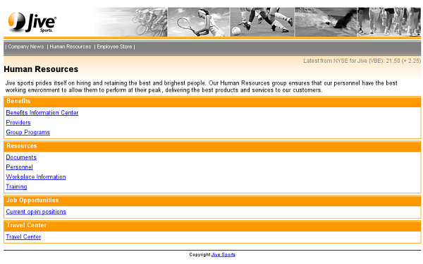

We will now recreate the Jive HR page, which will fetch its header and footer from the files described in the previous module.

xmlns:urid="http://www.volantis.com/xmlns/marlin-uri-driver"
<body>
<!-- The common material for the page header -->
<urid:fetch href="jiveheader.xdinc"/>
<!-- Page Title -->
<h2 id="title">Human Resources</h2>
<!-- The article -->
<div id="article">
<p> Jive sports prides itself on hiring and retaining the best and brightest
people. Our Human Resources group ensures that our personnel have the best
working environment to allow them to perform at their peak, delivering the
best products and services to our customers. </p>
...
</div>
<!-- The common material for the page footer -->
<urid:fetch href="jivefooter.xdinc"/>
</body><urid:fetch href="jivefooter.xdinc"/>
The urid:fetch element can optionally be wrapped in the pipeline:transform element. This allows you convert or filter the data with and XSL transform, before adding it to a page. This approach is useful when external content is in another XML vocabulary. You will learn more about this mechanism later on.
<?xml version="1.0" encoding="UTF-8"?>
<html xmlns="http://www.w3.org/2002/06/xhtml2"
xmlns:urid="http://www.volantis.com/xmlns/marlin-uri-driver"
xmlns:mcs="http://www.volantis.com/xmlns/2006/01/xdime/mcs">
<head>
<title>Human Resources</title>
<!-- Links to the layout and theme for this page -->
<link rel="mcs:layout" href="/jivearticle.mlyt"/>
<link rel="mcs:theme" href="/jive.mthm"/>
</head>
<!-- Page body -->
<body>
<!-- The common material for the page header -->
<urid:fetch href="jiveheader.xdinc"/>
<!-- Page Title -->
<h2 id="title">Human Resources</h2>
<!-- The article -->
<div id="article">
<p> Jive sports prides itself on hiring and retaining the best and brightest
people. Our Human Resources group ensures that our personnel have the best
working environment to allow them to perform at their peak, delivering the
best products and services to our customers. </p>
<div class="company_item">
<h3 class="company_header">Benefits</h3>
<p>
<a href="#">Benefits Information Center</a>
</p>
<p>
<a href="#">Providers</a>
</p>
<p>
<a href="#">Group Programs</a>
</p>
</div>
<div class="company_item">
<h3 class="company_header">Resources</h3>
<p>
<a href="#">Documents</a>
</p>
<p>
<a href="#">Personnel</a>
</p>
<p>
<a href="#">Workplace Information</a>
</p>
<p>
<a href="#">Training</a>
</p>
</div>
<div class="company_item">
<h3 class="company_header">Job Opportunities</h3>
<p>
<a href="#">Current open positions</a>
</p>
</div>
<div class="company_item">
<h3 class="company_header">Travel Center</h3>
<p>
<a href="#">Travel Center</a>
</p>
</div>
</div>
<!-- The common material for the page footer -->
<urid:fetch href="jivefooter.xdinc"/>
</body>
</html>
| Name | Purpose |
|---|---|
| a | Used to create an explicit link to another place in the same document or to another document. The current document is the source of the link and the value of the href attribute, defines the link target |
| body | Contains the document's content. |
| div | A section used to add extra structure to documents. Style sheets can be used to control the presentation. |
| h1, h2, h3, h4, h5, h6 | Heading elements for sections within a document. The number associated with each element indicates its relative position in the hierarchy of headings, with 1 indicating the top level and 6 the lowest level. |
| head | Information such as the title and other metadata that is not document content. The contained title element is required. |
| html | The container for the XDIME 2 document. |
| link | Defines a single link. Multiple links and relationships may be used in the head section of a document. |
| p | Block element that defines a paragraph. |
| title | The title element is used to identify the document. It can contain only text. |
| urid:fetch | Specifies a driver URI. |
| Core attributes | Attributes that are common to XDIME 2 elements. |
| Hypertext attributes | Attributes that define link targets. |